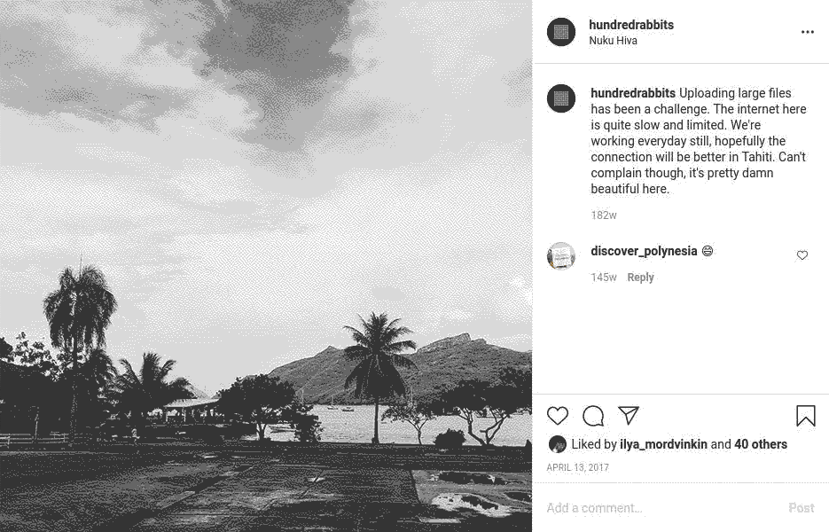

internet
Internet access is the woe of any working nomad. internet is sometimes spotty, and data in some countries is slow, expensive, or limited to small blocks at a time. While circumnavigating the Pacific, we amassed sim cards, pocket WiFis, and have often used connections from businesses on land. Overtime, we found ways to lessen our dependence on internet, and to save on bandwidth.
With limited access, it is important to use online time wisely. Prior to connecting we make a list of tasks that we must do, such as pushing updates and making backups of our data online. When searching for help online, we disable javascript and use lightweight search engines, such as ddg.gg/lite. When checking social media, we disable auto-playing videos and image previews to save bandwidth.
When we have a reliable internet connection, we gather copies of all the online material we will need. We keep offline versions of entire websites, writing guides, articles and even whole sections of Wikipedia (using wget) If we find ourselves without a connection, we can still solve our problems by using our offline mirrors. By the way, you can download our entire website.
To reduce your bandwidth usage and battery drainage, install NoScript, and uBlock on your browser; or use a text-only browser like Lynx.
We research our destinations ahead of time to make sure we’ll have a reliable connection when we need it. This means we’ll be spending less time in secluded areas, and more time in city centers near a cell tower or WiFi signal. With some planning it is possible to have both paradise and connectivity, we found such a place in Huahine (see internet in paradise) in french polynesia, and again in fiji. Internet access will only get better as far-flung island nations gain purchasing power.